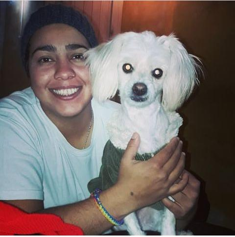

Hola a todos! mi nombre es Marcela Zamudio,soy de Paso de Los Libres, Corrientes. Soy Tecnica Seperior en Desarrollo de Software, estudie en el Profesorado de mi ciudad.
Altualemente me encuentro trabajando como Maestra Integradora, tambien estoy estudiando Profesorado Universitario en la Universidad Catolica de Cuyo en la modalidad a Distancia.
Este curso de Desarrollo Web me sirvio para poder despejar algunas dudas que me habia quedado de cuando estudiaba en el profesorado y aprender otras cosas nuevas.
Espero les guste esta pagina piloto, y tambien les pueda servir como una guia. Saludos!
